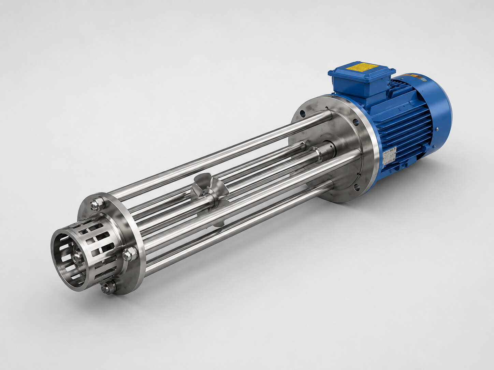

میکسر هموژنایزر چه کاربردی دارد؟
میکسر هموژنایزر برای اختلاط، حلکردن و یکنواختسازی مواد در خطوط صنایع غذایی و نوشیدنی به کار میرود. طراحی تجهیز باید با نوع محصول، غلظت، حجم بچ یا جریان پیوسته و هدف فرایندی هماهنگ شود.
کاربرد در خط تولید
فرمولاسیون و اختلاط مواد در خطوط غذایی و نوشیدنی و کاربردهای آزمایشگاهی تا تولید صنعتی.
مشخصات قابل سفارش
| جنس | Stainless Steel 304L–316L |
|---|---|
| ظرفیت | ۵۰ تا ۵۰٬۰۰۰ لیتر در ساعت |
| مدلها | آزمایشگاهی و صنعتی |
مزیتهای این راهکار
- اختلاط یکنواخت مواد
- قابلیت طراحی در ظرفیتهای متنوع
- امکان انتخاب متریال متناسب با فرایند
- قابل یکپارچهسازی با مخزن و پمپ
- طراحی براساس شرایط واقعی خط
انتخاب تجهیز مناسب از کجا شروع میشود؟
انتخاب نهایی باید براساس نوع محصول یا سیال، ظرفیت واقعی خط، شرایط نصب، سطح اتوماسیون و تجهیزات بالادست و پاییندست انجام شود. برای جلوگیری از ایجاد گلوگاه، مشخصات این دستگاه باید در کنار کل فرایند بررسی شود.
پرسشهای متداول
میکسر هموژنایزر در چه ظرفیتی ساخته میشود؟
بازه ثبتشده بهریز مبدل از ۵۰ تا ۵۰٬۰۰۰ لیتر در ساعت است.
برای انتخاب میکسر چه اطلاعاتی لازم است؟
نوع محصول، ظرفیت، غلظت، دما، شیوه تولید و هدف اختلاط باید مشخص شود.
آیا مدل آزمایشگاهی هم قابل ساخت است؟
بله، مدلهای آزمایشگاهی و صنعتی در سبد تجهیزات ثبت شدهاند.
راهکارهای مرتبط
مخازن استنلس استیل · مونوپمپ انتقال سیالات غلیظ · طراحی تجهیزات خط تولید نوشیدنی